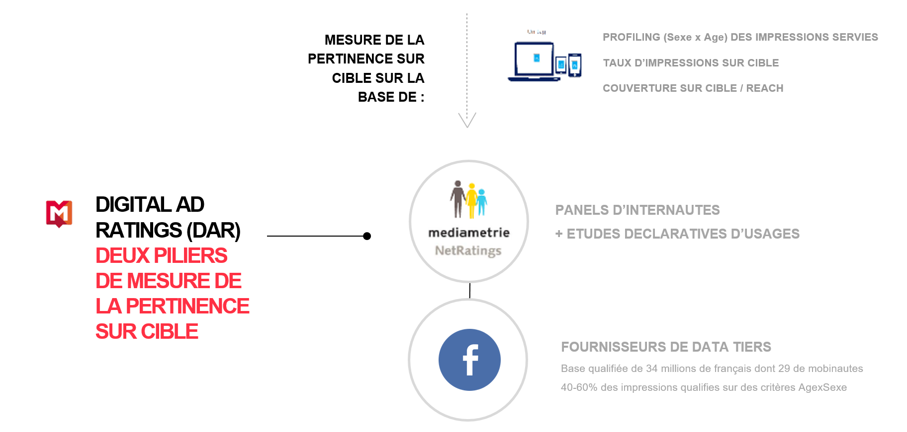
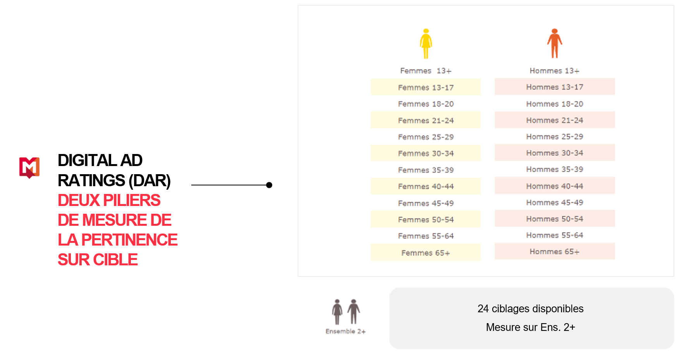
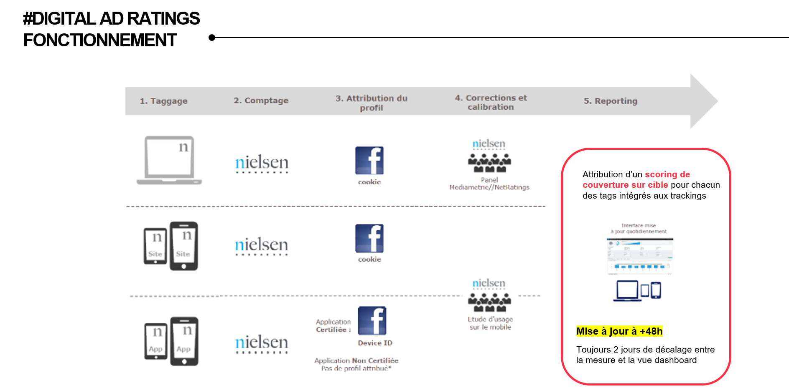
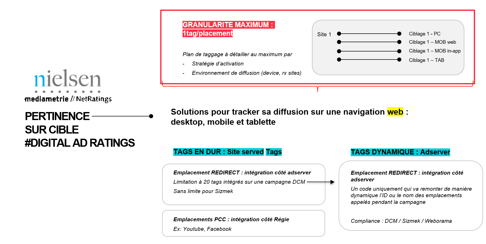
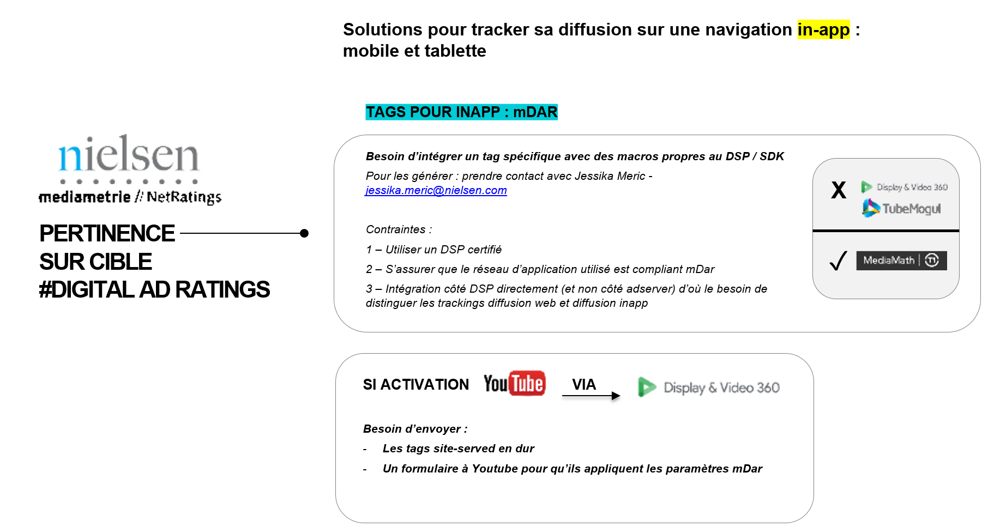

Challenge 4 : PERTINENCE SUR CIBLE
Toucher un internaute dans un contexte sécurisé à un emplacement visible, tel est le graal du marketeur lorsqu'en plus cet internaute est confirmé comme faisant partie de la population ciblée par la marque.
Comment savoir si l'on s'adresse effectivement à sa cible ?
Dans la publicitié digitale, délivrer une impression peut être identifiée à quel groupe socio-démographique l'internaute appartient.
Avec la technologie de Mediametrie et Nielsen, la solution de tracking tiers DAR est particulièrement efficace pour analyser quels ont été les clusters de population touchés.
Pour les marketeurs, cela signifie que des études de couverture sur cible peuvent être menées, savoir quelle proportion de sa population cible a pu être touchée par sa campagne, à quelle fréquence, etc.


Quelle analyse pour connaître la pertinence sur cible ?
Nielsen et Mediamatrie arrivent à déterminer selon leurs panels de référence l'attribution à un profil socio démographique de l'internaute, sans pour autant que cet individu ne soit loggué.

Mais alors comment mesurer et optimiser sa pertinence sur cible ?
Faire attention à son environnement de diffusion et à ses volumes par segment !
Adapter ses trackings :
Chaque environnement de diffusion a ses propres contraintes dont il faut tenir compte au moment de leur création et intégration.
Faire attention à la granularité et au volume :
Si les emplacements de trackings ne remontent que de très faibles volumes, la technologie DAR ne pourra pas procéder à l'analyse du segment. Il faut donc arbitrer entre avoir du détail mais conserver une significance en terme de volume pour chacun des segments.

